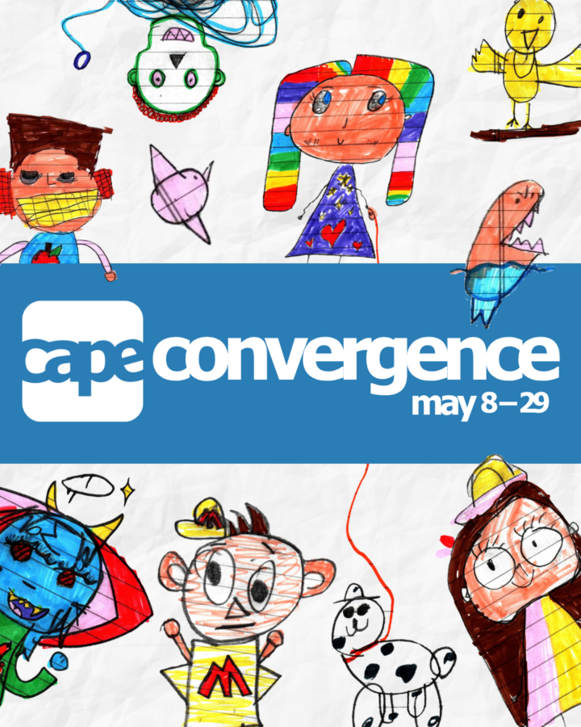

Convergence
An annual exhibition of CAPE’s in-school Artist/Researcher Partners Program that brings together the artworks and investigations of over 1,600 students from 23 Chicago public schools. Convergence opens the world of classroom learning to viewers, highlighting how students conceptualize the world and academic material through creation.
Join us for the opening reception on May 9 from 11 AM–2 PM in the CAPE gallery. Enjoy light bites and refreshments while meeting the artists, students, and teachers behind this incredible work!